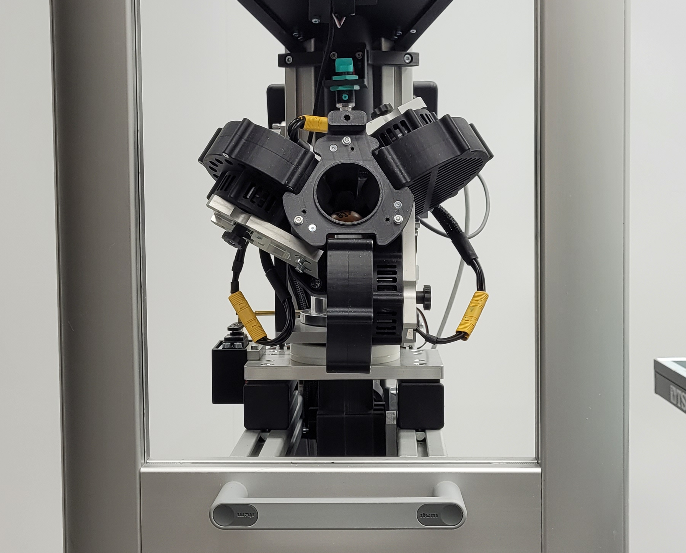
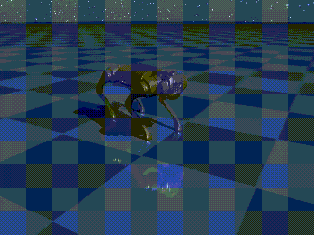

Alexander Dittrich
PhD Student in Robot Learning at the
Laboratory of Intelligent Systems at EPFL
PhD Student in Robot Learning at the
Laboratory of Intelligent Systems at EPFL
I am a doctoral researcher at the École Polytechnique Fédérale de Lausanne (EPFL) in the Laboratory of Intelligent Systems, advised by Prof. Dario Floreano. My work explores how adaptive mechanisms in artificial neural networks — such as Hebbian plasticity — can be combined with meta‑reinforcement learning to enable more autonomous and resilient robot behavior. I am particularly interested in how these ideas translate to unconventional soft robotic systems, including tensegrity structures, where morphology and control are deeply intertwined.
Before joining EPFL, I studied Mechatronics at the University of Stuttgart, specializing in control engineering, robotics, and machine learning. My previous research at the Max Planck Institute for Intelligent Systems examined the generation and quantification of spin in robot table tennis, while work at the Fraunhofer Institute for Manufacturing Engineering and Automation focused on machine learning approaches for human activity recognition in assistive systems. Alongside my academic path, I have also worked in industry on distributed control, embedded systems, and autonomous robots.

An open-source table tennis ball launcher generating human-level speeds and spins for robotic learning and research.

Self-modifying Plastic Neural Networks for Robot Locomotion.
More research projects on the way
Loading latest posts...
@ 2025 Alexander Dittrich.
Basic layout modified from Timothy Gebhardt
Particle animation inspired by Vincent Garreau